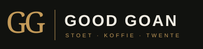
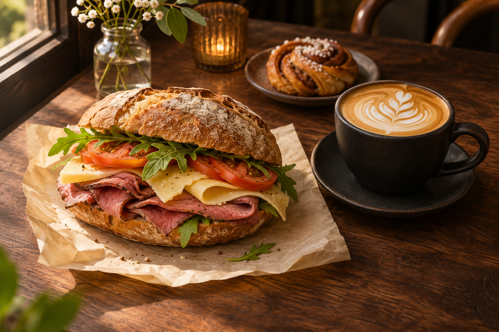

Ham
Zachte witte bol, boter en dun gesneden ham.

Een zachte witte bol. Dun gesneden beleg. Een goeie kop koffie. En alle tijd om even lekker te zitten.
Een voorstel voor een broodjes- en koffiezaak, mogelijk in Ootmarsum.
Goed hoeft niet ingewikkeld te zijn. Een witte bol met boter en dun gesneden vleeswaren. Misschien een lekker sausje erbij. Meer heeft een goeie lunch soms niet nodig.
Zachte witte bol, boter en dun gesneden ham.
Witte bol met boter en dun gesneden fricandeau.
De vertrouwde combinatie: wit brood, boter en dun gesneden lever.
Een witte bol met boter en dun gesneden pekelvlees.
Dun gesneden rosbief op een witte bol met boter.
Good Goan kan meer zijn dan een broodje voor onderweg. Een warme plek voor de eerste koffie, een fijne lunch of gewoon een praatje tussendoor.
Voorgesteld koffieaanbod. Bonen, bereiding en prijzen bepalen we later.
Een eigen broodjes- en koffiezaak. Herkenbaar Twents, warm en toegankelijk, met aandacht voor wat er op je bord en in je kop zit.
De naam Good Goan heeft ruimte voor die combinatie: goed eten, goeie koffie en een goed moment. Het eerdere zwart-goud-ivoor merkidee vormt de basis voor deze nieuwe horeca-uitwerking.
We verkennen het idee. Er is nog geen definitief adres, openingsdatum of bezorggebied.
Bekijk hoe online kiezen en samenstellen voor Good Goan kan werken.
Bekijk de besteltestGeen echte betaling, bestelling of bezorging.